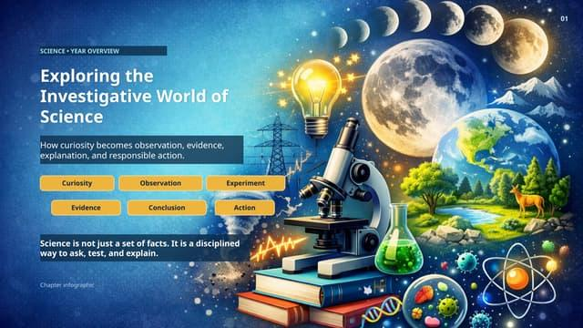
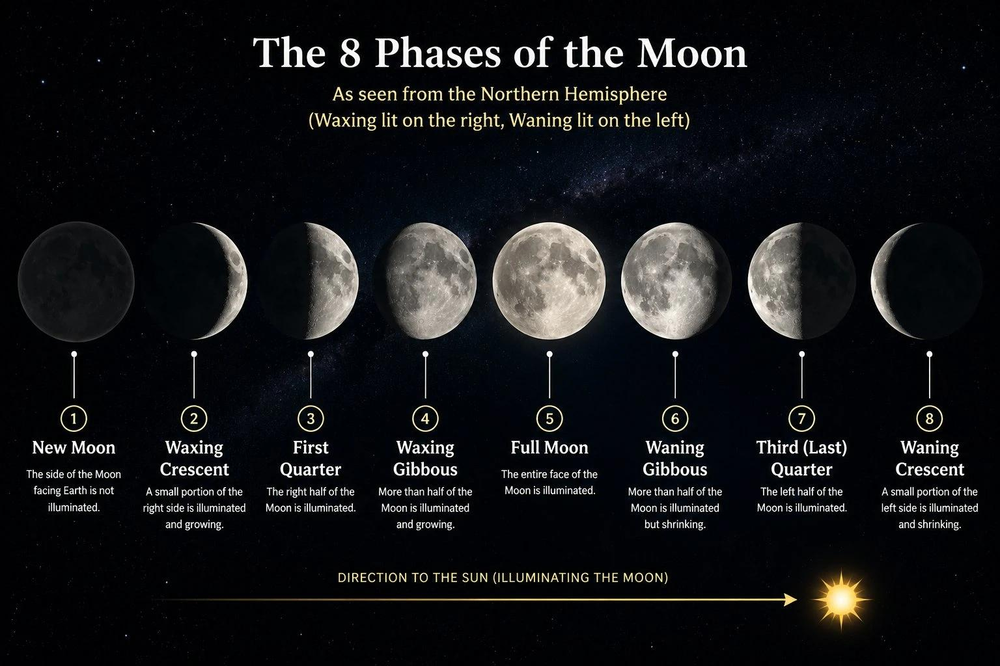
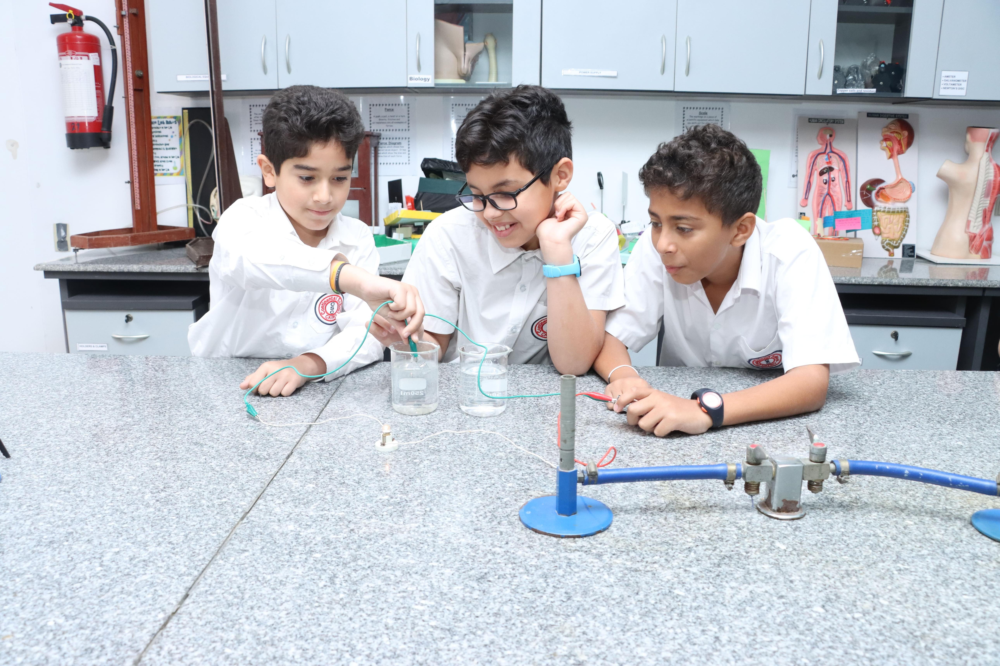
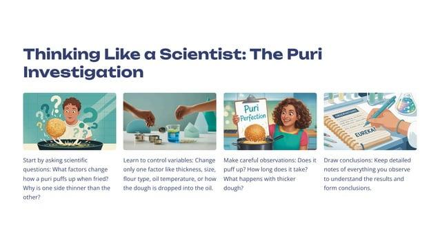
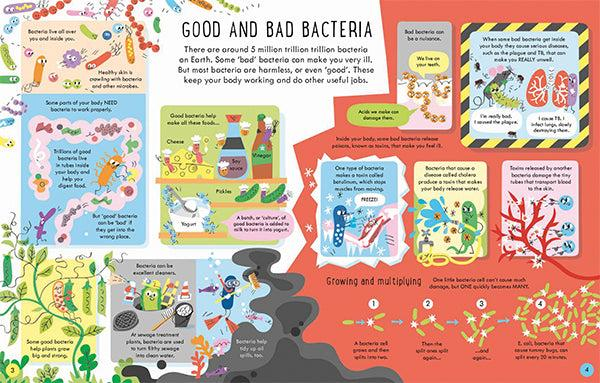
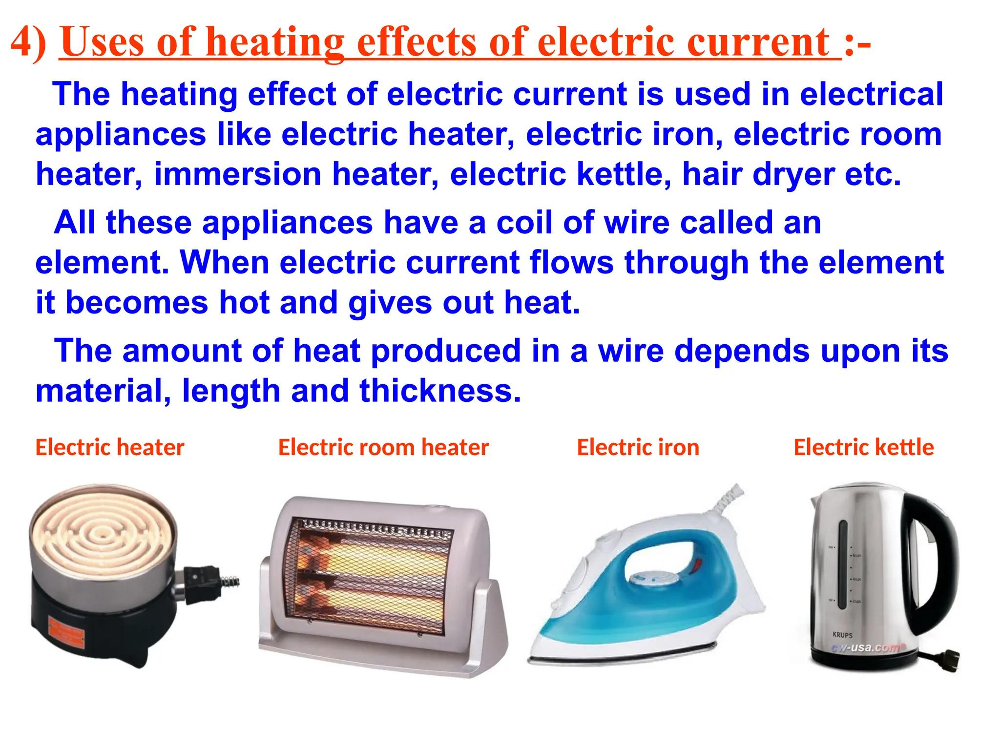
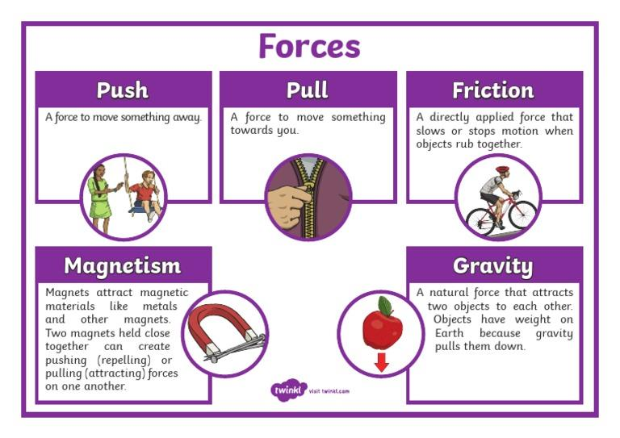
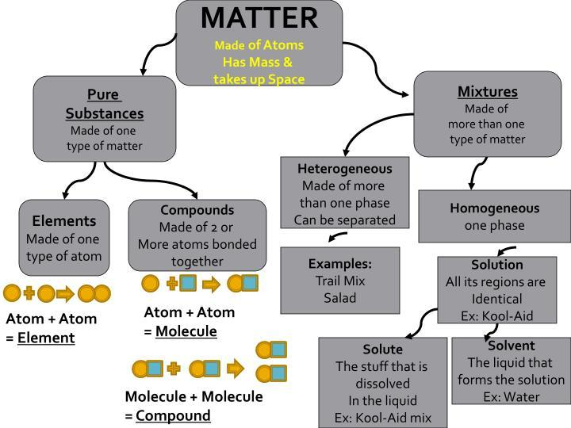
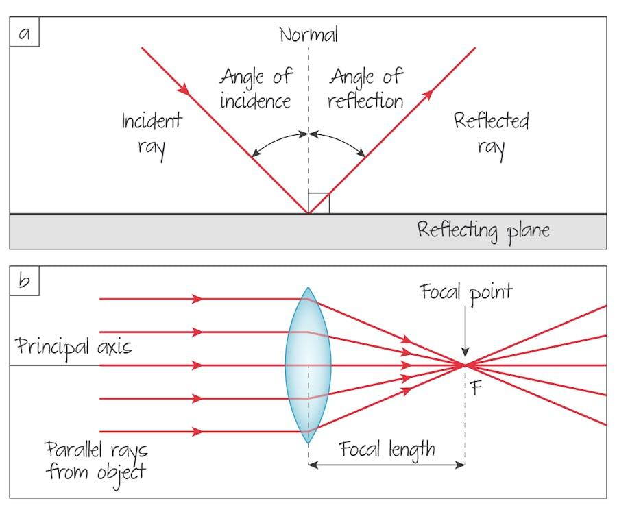
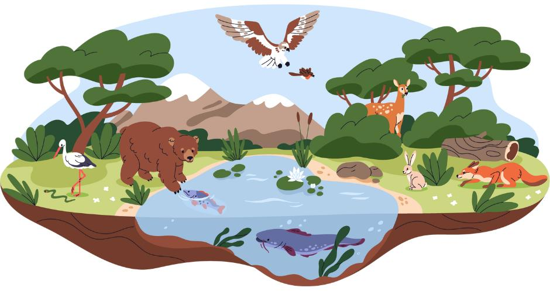

📘 Chapter 1: Exploring the Investigative World of Science – Questions and Answers

Part A: Short Answer Questions
Question 1. What is scientific investigation?
Answer: Scientific investigation is a systematic way of finding answers to questions through careful observation, experiments and measurements.
Question 2. Why is curiosity important in science?
Answer: Curiosity helps us ask questions about the world around us. It encourages us to explore, observe and discover new things.
Question 3. What is observation?
Answer: Observation means carefully watching something and collecting information using our senses or scientific instruments.
Question 4. Why does a puri puff up when fried in hot oil?
Answer: A puri puffs up because the moisture inside the dough changes into steam when heated. The steam expands and makes the puri swell.
Question 5. What are microbes?
Answer: Microbes are very tiny living organisms that cannot usually be seen with our naked eyes. Some help us, while others cause diseases.
Question 6. What are the two effects of electric current mentioned in this chapter?
Answer: The two effects of electric current are:
- Heating effect of electric current.
- Magnetic effect of electric current.
Question 7. What is the difference between solids and gases?
Answer: In solids, particles cannot move much and remain closely packed. In gases, particles move freely and are far apart.
Question 8. What are elements, compounds and mixtures?
Answer:
- Elements: Pure substances made of one type of atom.
- Compounds: Substances formed when two or more elements combine chemically.
- Mixtures: Combinations of two or more substances that can be separated physically.
Question 9. What causes the different phases of the Moon?
Answer: The different phases of the Moon occur because different portions of its illuminated part are visible from Earth as the Moon moves around Earth.

Question 10. What is an ecosystem?
Answer: An ecosystem is a system in which living organisms interact with each other and with their surroundings, such as air, water and sunlight.
Part B: Long Answer Questions
Question 1. Explain the importance of scientific investigation.
Answer: Scientific investigation helps us understand the world around us. It is a systematic process of finding answers to scientific questions.
Its importance includes:
- It develops curiosity and logical thinking.
- It helps us understand natural phenomena.
- It encourages careful observation.
- It helps us perform experiments.
- It allows us to collect and compare information.
- It helps us discover new facts and improve our knowledge.
Conclusion: Scientific investigation makes us better learners and problem-solvers.

Question 2. How can we investigate why a puri puffs up when fried?
Answer: We can investigate this everyday phenomenon through simple experiments.
The steps are:
- First, ask a scientific question: Why does a puri puff up?
- Prepare dough using flour and water.
- Make puris of different thicknesses and sizes.
- Heat oil at different temperatures.
- Fry the puris under controlled conditions.
- Observe whether they puff up.
- Measure the time taken by each puri to puff up.
- Record all observations.
We should change only one factor at a time while keeping the other conditions the same. This helps us understand the factors affecting the puffing of a puri.
Question 3. Explain the steps involved in a scientific investigation.
Answer: Scientific investigation follows a systematic process.
The main steps are:

- Ask a Question: Identify something you want to understand.
- Make Observations: Carefully observe the phenomenon.
- Plan an Experiment: Decide how to test your question.
- Identify Variables: Decide what to change and what to measure.
- Perform the Experiment: Carry out the experiment carefully.
- Record Observations: Write down the results.
- Analyse Results: Compare the collected information.
- Draw Conclusions: Explain what you have learned.
These steps help scientists understand different phenomena.
Question 4. Explain the role of microbes in our lives.
Answer: Microbes are tiny organisms that play an important role in our lives. They can be both useful and harmful.
Useful Microbes:
- Some help in digesting food.
- Some are used in producing medicines.
- Some are useful in various biological processes.
Harmful Microbes:
- Some cause infections.
- Some spread diseases.
- Some may affect human health.
We can protect ourselves through nutritious food, exercise, medicines and vaccines.

Question 5. Explain the heating and magnetic effects of electric current with examples.
Answer: Electric current produces different effects that are useful in our daily lives.
1. Heating Effect:
When electric current passes through a suitable conductor, it produces heat.
Examples:
- Electric heater
- Electric iron
- Electric toaster
2. Magnetic Effect:
When electric current flows through a wire, it produces a magnetic effect.
Examples:
- Electric motors
- Electromagnets
- Some electrical machines
Both effects make our daily lives easier and more comfortable.

Question 6. What are force and pressure? Explain their importance in everyday life.
Answer:
Force: A force is a push or pull that can change the speed, direction or shape of an object.
Examples:
- A ball falling towards the ground.
- A car stopping when brakes are applied.
- A person pushing a cart.
Pressure: Pressure is the force acting per unit area.
Force and pressure are important in everyday life because:
- They help us understand the motion of objects.
- They explain why objects speed up or slow down.
- They help us understand how air moves.
- Differences in air pressure can produce winds and cyclones.

Question 7. Explain the arrangement and movement of particles in solids, liquids and gases.
Answer: Everything around us is made up of tiny particles. Their arrangement and movement are different in different states of matter.
1. Solids:
- Particles are closely packed.
- They cannot move much.
- Solids have a fixed shape.
2. Liquids:
- Particles are less tightly packed.
- They can move around each other.
- Liquids take the shape of their containers.
3. Gases:
- Particles are far apart.
- They move freely in all directions.
- Gases do not have a fixed shape or volume.

Question 8. Differentiate between elements, compounds and mixtures with examples.
Answer: Materials around us can be classified into elements, compounds and mixtures.
| Elements | Compounds | Mixtures |
|---|---|---|
| Made of one type of element. | Made of two or more elements chemically combined. | Made of two or more substances mixed together. |
| Pure substances. | Pure substances. | Not necessarily pure substances. |
| Cannot be broken down chemically into simpler substances. | Can be broken down chemically. | Components can be separated physically. |
| Examples: Iron, oxygen. | Examples: Water, carbon dioxide. | Examples: Air, salt water. |
For example, when sugar dissolves in tea, it forms a solution.

Question 9. Explain how light reflection and refraction help us in daily life.
Answer: Light plays an important role in our daily lives.
1. Reflection of Light:
Reflection occurs when light rays bounce back from a surface.
Examples:
- Images formed in plane mirrors.
- Reflection from shiny metal spoons.
- Reflection of sunlight from the Moon.
2. Refraction of Light:
Refraction occurs when light bends while passing from one medium to another.
Examples:
- Lenses in spectacles.
- Magnifying glasses.
- Images formed by lenses.
These properties of light help us understand how mirrors, lenses and many optical instruments work.

Question 10. Explain the importance of ecosystems and the conditions that make Earth suitable for life.
Answer: An ecosystem consists of living organisms and their surroundings. All living things depend on one another and on their environment.
Importance of Ecosystems:
- Plants and animals depend on air, water and sunlight.
- Different organisms interact with one another.
- Ecosystems support life on Earth.
- They help maintain the balance of nature.
Conditions that Make Earth Suitable for Life:
- Earth is at a suitable distance from the Sun.
- Water can exist in liquid form.
- The atmosphere provides oxygen for breathing.
- The atmosphere protects us from harmful ultraviolet rays.
Human Activities and Climate Change:
Human activities can increase Earth's temperature and disturb climate patterns. We should use science to understand these changes and protect our planet.

Part C: Important Points to Remember
- Science begins with curiosity.
- Careful observation is essential for investigation.
- Experiments help us find answers.
- Only one variable should be changed at a time in a controlled experiment.
- Observations and measurements should be recorded.
- Scientific investigation helps us understand and protect our world.
Chapter Summary
Science helps us understand the world around us through observation, experiments and measurements. Scientific investigation begins with curiosity and follows a systematic process of asking questions, planning experiments, collecting information and drawing conclusions.
We can use scientific investigation to understand everyday events, such as why a puri puffs up when fried. Science also helps us learn about microbes, electric current, force, pressure, states of matter, elements, compounds, mixtures, light and ecosystems.
Scientific knowledge helps us solve problems and understand nature. We should use science responsibly to protect our environment and our planet.
Message of the Chapter
Be curious, ask questions, observe carefully and use experiments to discover the world around you.
MCQ Quiz
अध्याय के वस्तुनिष्ठ प्रश्नों का अभ्यास करें।
MCQ Quiz शुरू करेंPDF Notes
इस अध्याय के नोट्स PDF में पढ़ें या डाउनलोड करें।
📄 View PDF ⬇️ Download PDF